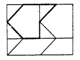

視覺認知量表-閉合之靈活性
隱藏圖形測試作答說明
在分別標示為字母A、B、C、D和E的五個圖形中，有一個可以圖案樣式的題中吻合被找到。
選擇你在該題圖案上找到對應的圖形。
備註:在五個圖形中，只有一個圖形會以同樣的方向與大小隱藏在每題圖案中。
以下為兩個範例:


範例題1:選擇A為符合之圖形

範例題2:選擇B為符合之圖形
測試時間3分鐘，共16題。
如找不到圖形可忽略該題，無須猜題作答。
您好：
這是一份由國立臺北科技大學互動設計系，研究關於尋找資訊視覺化的顯著性認知與認知負荷的調查，
主要希望透過本實驗問卷探討三維數據顯示之視覺閉合感知。
問卷內容分為三個部分:基本資料、視覺認知(閉合之靈活性16題、感知速度、空間方位)、三維資料模型實驗題，感謝您撥冗填答。
本問卷採不記名，以編碼辨識個人的方式，並盡力維護您的隱私及善盡保密責任。
此研究未來發表採整體分析，您不會被辨識出，將發表於學位論文，亦無衍生的商業利益。
在此感謝您的熱心與配合，為資訊視覺化研究盡一份心力：）
國立臺北科技大學互動設計系
碩士研究生：徐千惠
指導教授：吳可久博士
Email:t107ac8512@ntut.org.tw
109年05月
※如同意填寫，請點選「同意進行問卷實驗」按鈕於下一頁作答